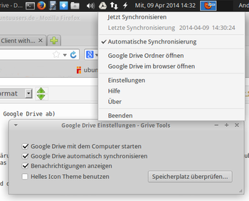

Grive
Archivierte Anleitung
Dieser Artikel wurde archiviert, da er - oder Teile daraus - nur noch unter einer älteren Ubuntu-Version nutzbar ist. Diese Anleitung wird vom Wiki-Team weder auf Richtigkeit überprüft noch anderweitig gepflegt. Zusätzlich wurde der Artikel für weitere Änderungen gesperrt.
Anmerkung: Grive verwendete das Google Docs API, dessen Entwicklung bereits 2012 eingestellt und am 20. April 2015 endgültig abgeschaltet wurde. Davon betroffen sind auch die Grive-Tools (siehe unten). Eine elegante Lösung bietet die Abspaltung Grive2, die eine identische Syntax besitzt.
Weitere Alternativen können beispielsweise drive  , google-drive-ocamlfuse oder gsync sein.
, google-drive-ocamlfuse oder gsync sein.
Zum Verständnis dieses Artikels sind folgende Seiten hilfreich:
Google Drive ist ein Online-Datenspeicher (Cloud-Dienst). Wer ein Benutzerkonto (bzw. eine E-Mail-Adresse) bei Google hat, der bekommt 15 GB Speicher kostenlos. Über eine Weboberfläche kann auch ohne eine Client-Software auf die Daten zugegriffen werden. Nur gibt es bisher keinen offiziellen Linux-Client, der die Synchronisation zwischen dem eigenen Rechner und Google Drive ermöglicht.
Grive ist ein kleines Programm für die Kommandozeile, das diese Lücke füllt. Grive synchronisiert die Daten eines ausgewählten Ordners (inklusive aller Unterordner) mit Google Drive. Wer seine Daten nur gelegentlich mit Google Drive abgleichen möchte, ist mit Grive bestens bedient.
Mit den Grive-Tools steht eine grafische Benutzeroberfläche für Grive zur Verfügung, die auch einen automatischen Dateiabgleich ermöglicht. Dadurch ist Grive in Kombination mit den Grive-Tools ein praktisches Datensicherungswerkzeug für mittelwichtige Daten und ein guter Ersatz für das Ende Juli 2014 eingestellte Ubuntu One.
Kommerzielle Alternativen sind Overgrive (vom gleichen Hersteller wie die Grive-Tools, aber mit erweiterten Funktionsumfang) und Insync (siehe Links).
Installation¶
Grive (nur die Kommandozeilenversion) ist seit Ubuntu 13.04 in den offiziellen Paketquellen enthalten und kann bequem über die Paketverwaltung installiert [1] werden:
grive (universe)
 mit apturl
mit apturl
Paketliste zum Kopieren:
sudo apt-get install grive
sudo aptitude install grive
Wer eine aktuellere Version des Programms installieren oder es unter Ubuntu 12.04 einsetzen möchte, der muss zur Installation auf ein "Personal Package Archiv" (PPA) [2] ausweichen oder das Programm aus dem Quelltext kompilieren.
PPA¶
Ubuntu 12.04¶
Um Grive (nur das Kommandozeilenwerkzeug) unter Ubuntu 12.04 nutzten zu können, muss man folgendes PPA freischalten. Da das genannte PPA eine Vielzahl anderer Programme enthält, sollte man es nach der Installation wieder deaktivieren.
Adresszeile zum Hinzufügen des PPAs:
ppa:nilarimogard/webupd8
Hinweis!
Zusätzliche Fremdquellen können das System gefährden.
Ein PPA unterstützt nicht zwangsläufig alle Ubuntu-Versionen. Weitere Informationen sind der  PPA-Beschreibung des Eigentümers/Teams nilarimogard zu entnehmen.
PPA-Beschreibung des Eigentümers/Teams nilarimogard zu entnehmen.
Damit Pakete aus dem PPA genutzt werden können, müssen die Paketquellen neu eingelesen werden.
Nach dem Aktualisieren der Paketquellen erfolgt die Installation wie oben angegeben.
Ab Ubuntu 12.10¶
Bei neueren Ubuntu-Versionen bietet es sich eher an, das folgende PPA zu nutzen, da dieses zusätzlich das Paket grive-tools und damit eine grafische Oberfläche für Grive zur Verfügung stellt.
Adresszeile zum Hinzufügen des PPAs:
ppa:thefanclub/grive-tools
Hinweis!
Zusätzliche Fremdquellen können das System gefährden.
Ein PPA unterstützt nicht zwangsläufig alle Ubuntu-Versionen. Weitere Informationen sind der PPA-Beschreibung des Eigentümers/Teams thefanclub zu entnehmen.
Damit Pakete aus dem PPA genutzt werden können, müssen die Paketquellen neu eingelesen werden.
Nach dem Aktualisieren der Paketquellen können folgende Pakete installiert werden:
grive (ppa)
grive-tools (ppa)
mit apturl
Paketliste zum Kopieren:
sudo apt-get install grive grive-tools
sudo aptitude install grive grive-tools
Benutzung¶

Grive¶
Um Grive nutzen zu können, müssen folgende Schritte befolgt werden. Als erstes wird ein Ordner mit beliebigem Namen (z.B. Google_Drive) im Homeverzeichnis erstellt, dessen Inhalt später synchronisiert wird: [3]
mkdir -p ~/Google_Drive
Im nächsten Schritt wechselt man in diesen Ordner:
cd ~/Google_Drive
und startet die Authentifizierung mit:
grive -a
-------------------- Please go to this URL and get an authentication code: https://accounts.google.com/o/oauth2/auth?scope=https%3A%2F%2Fwww.googleapis.com%2Fauth%2Fuserinfo.email+https%3A%2F%2Fwww.googleapis.com%2Fauth%2Fuserinfo.profile+https%3A%2F%2Fdocs.google.com%2Ffeeds%2F+https%3A%2F%2Fdocs.googleusercontent.com%2F+https%3A%2F%2Fspreadsheets.google.com%2Ffeeds%2F&redirect_uri=urn:ietf:wg:oauth:2.0:oob&response_type=code&client_id=22314510474.apps.googleusercontent.com -------------------- Please input the authentication code here: _
Jetzt meldet man sich im Browser mit den eigenen Zugangsdaten bei Google an. Die auf der Kommandozeile angezeigte URL gibt man in die Adresszeile des Browsers ein. Google fragt dann, ob Grive auf das eigene Google-Drive-Konto zugreifen darf. Hier auf "Akzeptieren" drücken und anschließend den im Browser angezeigten Authentifizierungscode auf der Kommandozeile eingeben.
Nachdem der Zugriff gestattet wurde, wird die Datei ~/Google_Drive/.grive angelegt, die die Zugangsdaten enthält. Die weitere Nutzung ist einfach: man wechselt in den Ordner ~/Google_Drive/ und führt folgenden Befehl aus:
grive
Nun wird das Verzeichnis mit Google Drive abgeglichen, d.h. alle Dateien, die im Google Drive vorliegen, werden auf den Computer heruntergeladen und alle Dateien aus dem Verzeichnis werden auf Google Drive hochgeladen. Eine im Ordner angelegte Verzeichnisstruktur wird ebenso 1:1 auf Google Drive übertragen. Bearbeitet man Dateien lokal, muss man mit dem erneuten manuellen Aufruf die Synchronisation ein weiteres Mal anstoßen. Es werden dann nur mehr aktualisierte Dateien hinauf bzw. heruntergeladen.
Grive-Tools¶
Das Paket grive-tools stellt ein grafisches Menü für Grive zur Verfügung. Im Unterschied zur Kommandozeilenversion kann man mit den Grive-Tools nur einen Ordner, der zwingend Google_Drive heißen muss, mit Google Drive abgleichen.
Der größte Vorteil der Grive-Tools ist, dass bei Dateiänderungen im Google_Drive-Ordner eine automatische Synchronisation mit Google Drive eingestellt werden kann. Nach der Installation stehen im Startmenü die drei Einträge zur Verfügung:
"Grive Setup" - entspricht der Funktion von
grive -aauf der Kommandozeile"Google Drive" - öffnet den Ordner Google_Drive im Dateimanager
"Google Drive Indicator" - aktiviert ein animiertes Symbol im Systray des Panels mit Optionen und Einstellungen
Grive Setup¶
Beim ersten Start von Grive Setup wird zuerst das Root-Passwort abgefragt. Nach einem Erklärungsfenster wird der Browser für den Google-Login gestartet. Wenn die Erlaubnis für den Zugriff von Grive auf Google Drive akzeptiert wurde, muss nur noch der Code in das entsprechende Fenster eingetragen werden und die Installation ist abgeschlossen.
Hinweis:
Wird Grive Setup ausgeführt und der Ordner ~/Google_Drive/ bereits vorhanden ist, dann wird der Nutzer gefragt, ob er den Ordner weiter verwenden oder löschen will.
Google Drive¶
Dieser Menüpunkt öffnet eigentlich nur den Ordner ~/Google_Drive/ im Dateimanager. Wenn der Google Drive Indicator aktiviert ist, werden die Daten abgeglichen.

Google Drive Indicator¶
Der aktive Google-Drive-Indicator wird durch das Symbol im Tray angezeigt. Mit einem Mausklick  auf das Symbol hat man die Auswahl zwischen:
auf das Symbol hat man die Auswahl zwischen:
"Jetzt synchronisieren"
"Automatische Synchronisierung" - wenn aktiviert, wird nach jeder Dateiänderung im Ordner die Synchronisation gestartet
"Google Drive Ordner öffnen"
"Google Drive im Browser öffnen"
Auch die Einstellungen erreicht man auf dem gleichen Weg. Hier hat man folgende Auswahl:
"Google Drive mit dem Computer starten" - aktiviert den Google Drive Indicator beim Systemstart
"Google Drive automatisch synchronisieren"
"Benachrichtigungen anzeigen"
"Helles Icon Theme benutzen" - aktiviert die Sichtbarbeit des Statusicons, falls es nicht angezeigt wird
Tipps und Tricks¶
Werden Dateien oder Ordner im lokalen Ordner ~/Google_Drive/ gelöscht, dann werden sie beim Abgleichen in den Google-Drive-Papierkorb verschoben. Von dort können sie wiederhergestellt werden.
Es ist möglich, mit dem Kommandozeilenwerkzeug
griveunterschiedliche Ordner mit jeweils einem anderen Google-Konto zu synchronisieren. Dafür muss jeder Ordner eigens mitgrive -aauthentifiziert werden.
Wenn die Datei ~/Google_Drive/.grive in einen anderen Ordner verschoben wird, dann kann dieser, genauso wie der bisherige Ordner, mit Google Drive abgeglichen werden. Eine neuerliche Authentifizierung ist nicht notwendig.
Man kann auf einem System parallel den von Grive-Tools erstellten Ordner ~/Google_Drive/ automatisch abgleichen lassen und einen oder weitere Ordner mit anderen Google-Konten manuell auf der Kommandozeile mit
griveabgleichen.
Wenn man eine identische .grive-Datei in mehreren Ordnern (z.B. auf unterschiedlichen Computern) verwendet, kann man die Daten vom Google Drive spiegeln. Allerdings kann man dabei leicht den Überblick verlieren, denn jeder Ordner hat dann vollen Zugriff auf das Google Drive inklusive Löschen.
Kostenlose Cloudspeicher sind generell kein sicherer Ort für vertrauliche Daten. Sensible Dateien sollte man zumindest verschlüsselt, z.B. in einem passwortgeschützten Archiv, ablegen.
Links¶
Grive: Open Source Google Drive Client For Linux
Web Upd8, 05/2012
Grive-Tools
- grafische Oberfläche für GriveAlternativprogramme:
InSync (kommerziell):
Insync - Inoffizieller Linux-Client für Google Drive fertig
 - heise Open Source, 08/2013
- heise Open Source, 08/2013InSync Brings Google Drive to Ubuntu
- Blogbeitrag 08/2012
Cloud-Dienste
 Übersichtsartikel
Übersichtsartikel
- Erstellt mit Inyoka
-
 2004 – 2017 ubuntuusers.de • Einige Rechte vorbehalten
2004 – 2017 ubuntuusers.de • Einige Rechte vorbehalten
Lizenz • Kontakt • Datenschutz • Impressum • Serverstatus -
Serverhousing gespendet von